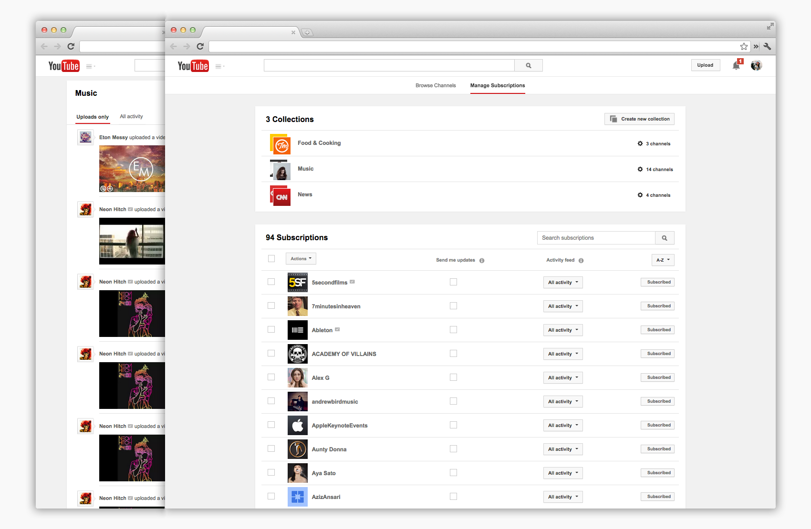
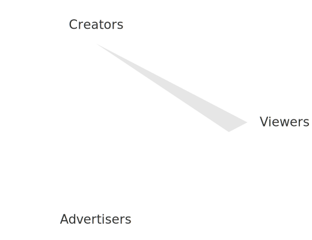

Playlists
As the UX owner for playlists, I designed various key pages and features to unify the playlist experience across YouTube's platforms. These designs support new features to be introduced with YouTube's music service.

Pages on the YouTube desktop site I've redesigned

Video Ads
Currently on the video ads team, where we work to create an ecosystem for advertisers to live alongside viewers and creators. I've worked on projects that involve ad relevancy and am currently designing for the advertiser self-serving tool, AdWords for Video.